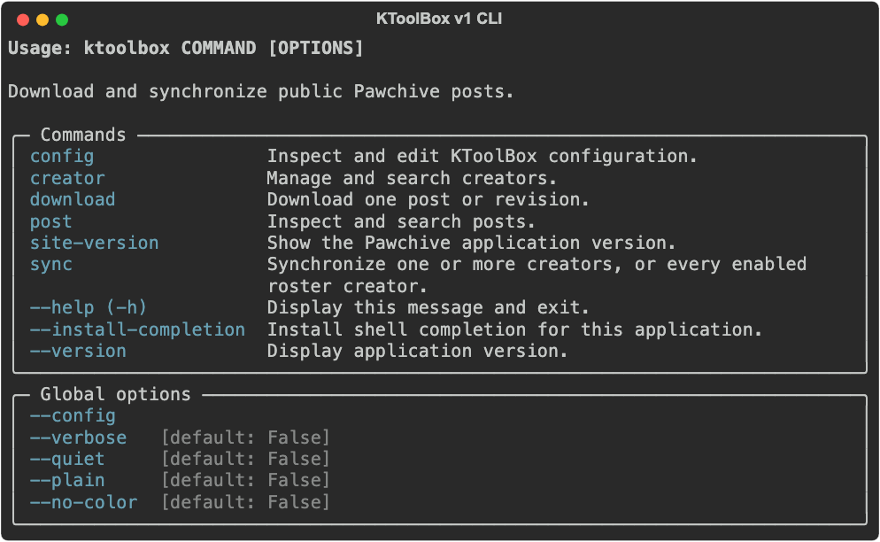

コマンドガイド¶
KToolBox は、一般的なハイフン区切りのオプションと Rich ヘルプを持つ Cyclopts コマンドを使います。ヘルプは直接表示され、ページャーを開きません。
ktoolbox --help
ktoolbox sync --help

グローバルオプションはコマンドの前後どちらにも配置できます。
ktoolbox --config ./ktoolbox.toml --plain sync
ktoolbox creator list --json --config ./ktoolbox.toml
診断ログには --verbose、進捗と通常ログの抑制には --quiet、安定した行単位の進捗には --plain、ANSI 色なしで対話的なレイアウトを維持するには --no-color を使います。
1 件の投稿をダウンロード¶
Pawchive ページの URL、または 3 つの識別値を渡します。
ktoolbox download https://pawchive.pw/fanbox/user/6570768/post/1836570
ktoolbox download \
--service fanbox \
--creator-id 6570768 \
--post-id 1836570
--output を省略すると、プロジェクトの既定ダウンロード先を使用します。この実行だけ変更するときに --output を指定し、プロジェクト外の絶対パスも利用できます。
--revision-id で 1 つの改訂を選択できます。Pawchive には単一改訂の詳細エンドポイントがないため、KToolBox は改訂一覧を取得して ID を照合します。現在の投稿をダウンロードするときにすべての改訂を含めるには、KTOOLBOX_JOB__INCLUDE_REVISIONS=True を設定します。
中断後は同じコマンドを再実行してください。完了済みファイルはスキップされ、互換性のある一時ファイルは HTTP Range リクエストで再開されます。明示的な download には同期の除外ルールを適用しません。
クリエイターを同期¶
sync は、任意の数のクリエイター URL、service:id 識別子、プロジェクト一覧に保存されたエイリアスを受け付けます。
# 件数を制限した 1 クリエイターの同期。
ktoolbox sync fanbox:123 --length 1
# 複数のクリエイターが 1 つの並行ダウンロードプールを共有。
ktoolbox sync fanbox:123 patreon:456 studio-c --length 10
--length を省略すると、利用可能なすべてのページをたどります。CLI 境界の --offset は投稿インデックスで、KToolBox が Pawchive の 50 件単位のページオフセットに変換します。
ktoolbox sync fanbox:123 --offset 10 --length 5
ktoolbox sync fanbox:123 --start-time 2025-01-01 --end-time 2025-03-01
各クリエイターは Creator name [service-creator_id] として保存されます。クリエイターのプロデューサーは同時に最大 job.creator_concurrency 個実行されます。その上限付きキューは 1 つの公平なラウンドロビンスケジューラーに入り、job.count がファイル転送の並行数を制御します。全クリエイターを待たず、最初のジョブができ次第ダウンロードを開始します。
1 人のクリエイターが失敗しても、他のクリエイターで完了した作業は破棄されません。失敗したクリエイターは以前の索引を保ち、最後に概要を表示してステータス 1 で終了します。
一覧を管理¶
ktoolbox creator add fanbox:123 --alias studio-a
ktoolbox creator add https://pawchive.pw/patreon/user/456 --alias studio-b
ktoolbox creator disable studio-b
ktoolbox creator list
ktoolbox creator enable studio-b
ktoolbox creator remove studio-b
対象なしで ktoolbox sync を実行すると、有効な一覧項目をすべて同期します。明示的に指定した無効なクリエイターは実行されます。service:id 識別子は一意で、エイリアスは省略可能ですが指定する場合は一意です。設定の書き込みではコメントを保持します。
作品ではない投稿を除外¶
ktoolbox.toml に順序付きのフィールド除外ルールを定義します。ルールはグローバルまたは選択した service:id クリエイターだけに適用でき、タイトル、内容、タグ、ファイル名、ID、ネストしたリストパスを検査できます。最初に一致したルールは、詳細、改訂、メタデータ、ディレクトリ、ダウンロード作業を作成する前に投稿を除外します。
完全な例については設定ガイドを参照してください。KTOOLBOX_JOB__KEYWORDS_EXCLUDE は移行専用の廃止予定グローバルタイトル除外ルールとして残っています。
公開データを調べる¶
ktoolbox creator search --name example --service fanbox
ktoolbox post search --creator-id 6570768 --service fanbox --query preview --offset 0
ktoolbox post show fanbox 6570768 1836570
検索コマンドは既定でコンパクトな Rich テーブルを使います。機械可読な stdout には --json を追加します。ログと進捗は stderr のままです。--dump path.json は検証済みモデルをファイルにも書き込みます。
設定ユーティリティ¶
ktoolbox config path
ktoolbox config validate
ktoolbox config example
ktoolbox config edit
ktoolbox site-version
エディターにはオプションの urwid 依存関係が必要です。dotenv 設定と一覧・除外ルールのプロジェクト文書を編集し、保存前に検証します。
オプションのプロジェクトパネルを実行¶
ktoolbox[webui] をインストールしたら、パネルをプロジェクトディレクトリにバインドします。アカウントを設定するか、今回ターミナルに表示される admin とランダムパスワードを使えます。ktoolbox.toml がない場合は警告後に自動作成されます。
ktoolbox webui . --host 127.0.0.1
パネルは、同じダウンロード、同期、一覧、除外ルール、検索、設定のワークフローを、永続タスクの進捗と制御を備えた管理対象プロジェクト操作として提供します。ネットワークインターフェースで待ち受ける前に WebUI ガイドを参照してください。
終了ステータス¶
| コード | 意味 |
|---|---|
0 |
コマンドが正常に完了しました。 |
1 |
リモート操作、クリエイター、ファイルダウンロードのいずれかが失敗しました。部分ファイルは保持されます。 |
2 |
引数または設定が無効です。 |
130 |
ユーザーがコマンドを中断しました。 |
想定される失敗では Python のトレースバックを表示しません。